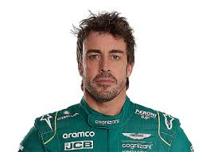

.jpg)
.jpg)
Va néixer a Oviedo un 29 de juliol de 1981. Des de molt petit sabia que el seu futur aniria lligat a l'automobilisme. Va començar a pilotar amb 3 anys, edat a la qual va començar a conduir karts, la millor escola, segons Senna i Schumacher, per a la Fórmula 1.
Ho ha guanyat tot en diferents categories de karts. És tricampió d'Espanya, d'Europa i campió del món el 1996.
Dona el salt als monoplaces el 1999. El primer dia que pujà a un cotxe amb alerons (el de Gené a l'Open Telefònica) va trigar només sis voltes a igualar els registres del català. Un ex enginyer de Ferrari de l'època de Lauda reconeix que mai ha vist un talent igual. Va arrasar a l'Open Telefònica, es confirmen les expectatives i el 1999 arrasa en l'Open Telefònica malgrat que és la seva primera temporada amb un monoplaça seriós.
La F-3000 és la prèvia de la F-1 i, per això, és un campionat difícil i amb una gran competència. Alonso no coneix els circuits europeus ni els monoplaces Lola, i a més només disposa d'hora i mitjana d'entrenaments cada cap de setmana. No obstant això, la seva progressió és espectacular: és 6è a Àustria, 2n a Hongria i 1r a Bèlgica.
|
|
|
 |
|---|